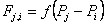
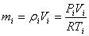
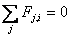

The air flow rate from zone j to zone i, Fj,i[kg/s], is some function of the pressure drop along the flow path, Pj - Pi:
|
 |
(1) |
The mass of air, mi [kg], in zone i is given by the ideal gas law
|
 |
(2) |
where
Vi = zone volume [m3],
Pi= zone pressure [Pa],
Ti= zone temperature [K], and
R= 287.055 [J/kg×K] (gas constant for air).
For a transient solution the principle of conservation of mass states that
|
|
(3) |

|
(4) |
where
mi= mass of air in zone i,
Fj,i= airflow rate [kg/s] between zones j and zone i: positive values indicate flows from j to i and negative values indicate flows from i to j, and
Fi>= non-flow processes that could add or remove significant quantities of air from the zone.
CONTAM 1.0 did not provide for such non-flow processes and flows were evaluated by assuming quasi-steady conditions leading to the following equation
|
 |
(5) |
CONTAM can now provide for such non-flow processes by allowing the density to vary during time steps when performing transient simulations.
You can activate this option with the Vary Density During Time Step setting under the Airflow Numerics Simulation Parameters. If this parameter is set then, equation 3 is implemented when performing airflow calculations; otherwise equation 5 is used.